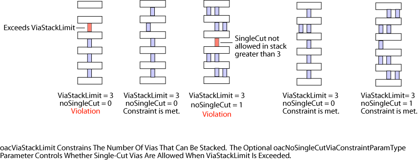

|
 |
 |
||||||
|
|
|
||||||
The built-in simple constraint oacViaStackLimit specifies the maximum number of continuous, stacked vias that are allowed. A via is considered to be in a stack with another via if the cut of one via overlaps any part of the cut of the other via.
A Boolean parameter specifies whether single-cut vias can be stacked. See the Parameters section for a detailed description and the Examples section for further clarification.
Two additonal parameters can be used to set the range of layers for which the constraint applies. One parameter specifies the bottom layer of the range, the other parameter specifies the top layer of the range. If not specified, the constraint applies to all layers.
| Constraint type: | oaSimpleConstraint |
| Value types: | oaIntValue |
| Database types: | oaTech |
| Object types: | oaAppObject |
The following value types are supported by this constraint:
oacViaStackLimit constraints have an oaIntValue that indicates the maximum number of vias that can be stacked.
Units: Count
The following parameters are supported by this constraint:
| Name | Value Type | Units | Default | Description |
|---|---|---|---|---|
| lowerLayer oacLowerLayerConstraintParamType |
oaLayerValue | Layer Number | None |
oacViaStackLimit constraints can include two optional parameters: lowerLayer(oacLowerLayerConstraintParamType), and upperLayer(oacUpperLayerConstraintParamType). If these parameters are specified, this constraint only applies when stacking vias in the range between the two specified layers. If these parameters are not specified, this constraint applies to all layers. The layers specified must be metal layers only. |
| upperLayer oacUpperLayerConstraintParamType |
oaLayerValue | Layer Number | None |
oacViaStackLimit constraints can include two optional parameters: upperLayer(oacUpperLayerConstraintParamType) and lowerLayer(oacLowerLayerConstraintParamType). If these parameters are specified, this constraint only applies when stacking vias in the range between the two specified layers. If these parameters are not specified, this constraint applies to all layers. The layers specified must be metal layers only. |
| oaNoSingleCutVia oacNoSingleCutViaConstraintParamType |
oaBooleanValue | Boolean | False |
The parameter has a Boolean value that specifies whether stacked vias can be single-cut or must be multiple-cut. If not specified, the parameter value defaults to false, and single-cut vias may be stacked up to the maximum number specified. If the parameter value is true, via stacks taller than the value of this constraint must consist of all multiple-cut vias. If the parameter is false or not given, multiple-cut vias can interrupt a stack count effectively resetting the count to zero. Otherwise, multiple-cut vias do not interrupt a stack count. |

The metal plug inside a via-hole has mechanical stress that causes stress in the metal above and below the contact hole. When vias are stacked, the stresses build up and result in a higher probability of failure. Some technologies handle this by requiring double-cut vias when stacking more than a certain number of vias.
Copyright 2002 - 2010 Cadence Design Systems, Inc.
All rights reserved.